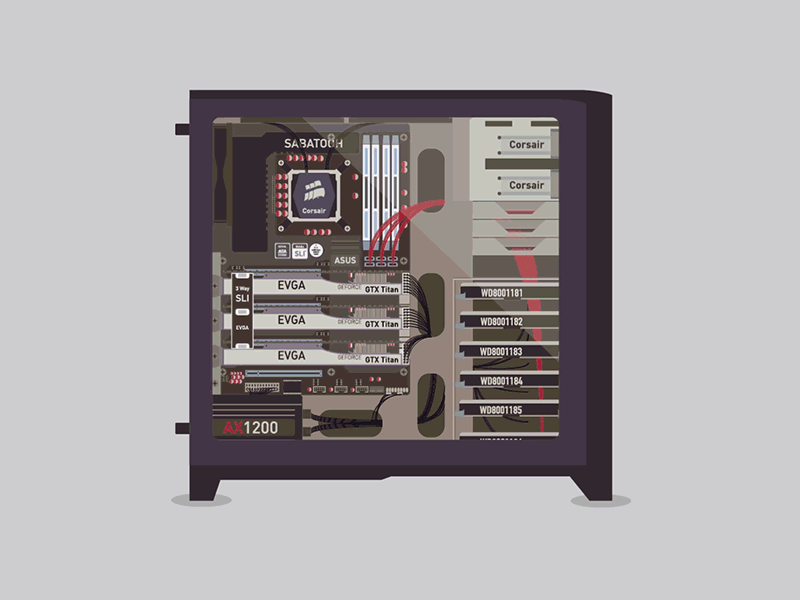

A workstation (WS) may be a computer dedicated to a user or cluster of users engaged in business or skilled work. It includes one or additional high resolution displays and a quicker processor than a private pc (PC). A digital computer conjointly has bigger multitasking capability as a result of further random access memory (RAM), drives and drive capability. A digital computer may have a higher-speed graphics adapters and additional connected peripherals.
The term digital computer conjointly has been accustomed reference a laptop or mainframe terminal on space|a neighborhood} area network (LAN). These workstations might share network resources with one or additional giant shopper computers and network servers.
Workstations typically ar engineered with AN optimized style for complicated information manipulation and image. Examples embrace image rendering and piece of writing, CAD (CAD), animations and mathematical plots. Workstations were the primary trade section to plug collaboration tools and advanced accessories and enhancements. These embrace 3D mice, multiple displays and high performance/capacity information storage devices.
Eventually, thought PCs adopted digital computer parts causative to the decline of the digital computer market section. in addition, the price differential decreased between lower-end workstations and higher-end PCs. Low-end workstations used Intel Pentium four or AMD Athlon sixty four CPUs, whereas high-end PCs used powerful processors like the Intel Xeon, IBM Power, AMD Opteron or Sun UltraSPARC - a powerhouse for computer-processing work. These latter machines ar generally noted as digital computer category PCs and embrace options such as:
Currently, Sun Microsystems makers the sole workstations, that use x86-64 microprocessors and Windows, Mac OS X, Solaris ten and Linux-distributed operative systems.